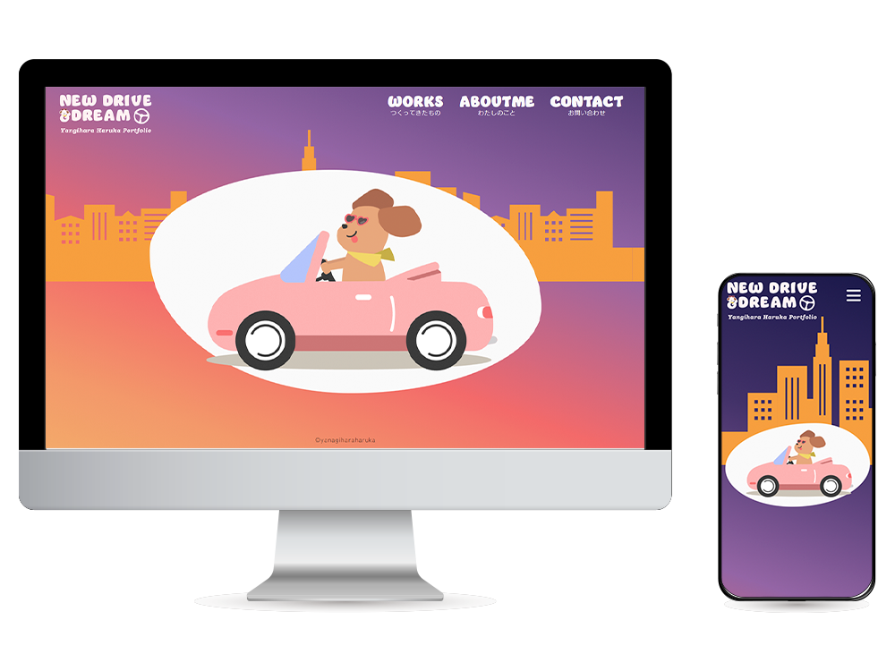
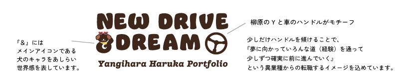
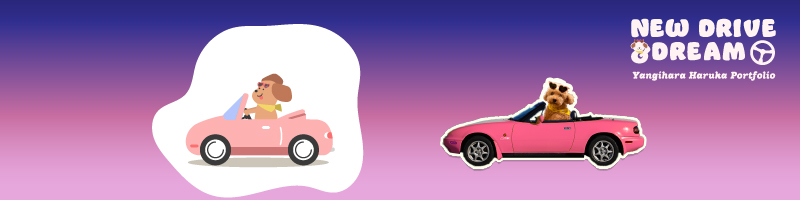

ポートフォリオサイト
NEW DRIVE AND DREAM
デザイン・コーディング（レスポンシブ対応）

- サイト概要
-
転職活動にあたり、これまでの制作物や経歴をまとめたポートフォリオサイトを作成しました。
コンテンツの中身が映えるようシンプルなページ構成にしつつも、「私らしさ」が伝わるような可愛くてユーモアのあるポートフォリオサイトに仕上げました。
- ターゲット層
-
Web制作会社の担当者の方々
- 目的・ゴール
- 転職活動にあたり、今までの経歴、経験、軸になるもの、また自分の強味や制作物についてお伝えする。
- コンセプト
- NEW DRIVE and DREAM
自動車業界という異業種からのキャリアチェンジという事で、「新しい道を新しい夢をもって進んでいく」という意味をこめています。
- 制作ポイント
-
採用担当者の方がどんな感情で見るかを想像し、ストーリーを組み立ててからサイト構成を組み立てました。
まずTOPページで自作のアニメーションを用いてサイトの世界観や雰囲気を知っていただいた後、Workページで制作物の一覧を見ていただきます。制作物は実際の雰囲気を知っていただきたいと考え、モックと背景画像を工夫しました。
次にAboutmeページで現状のスキルや今までの経歴、考えていることを「ドライブ」にたとえ表しました。人となり、Web業界を目指している理由、自分の強味をわかりやすく根拠を持ってアニメーションや図を持って遊び心も入れつつ伝えしています。
人となりが伝わるように、親しみやすさや安心感を感じてもらえるようデザイン全体に丸みをもたせ、ポップで可愛いらしい中にユニークさもいれたサイトデザインにしました。TOPページは、今まで私の人生に影響してきた場所をオープンカーでドライブしている様子をAffter Effectでアニメーションで作成しました。車とメインキャラクターは愛犬と愛車をモチーフにしています。- #fffdf9
- ベースカラー
- #bc6868
- メインカラー
- #ffc643
- アクセントカラー
Aboutmeページは、普段の私からドライバーに変身し、スキルスタンド（ガソリンスタンドをモチーフ）で知識を補充し、これまでの経歴から未来に向かって走っていく、というイメージでサイトのデザインをしました。
- 制作期間
- デザイン2週間、コーディング１週間
- 使用ツール
- Illustrator/Photoshop/HTML・CSS/JavaScrip/AfterEffect